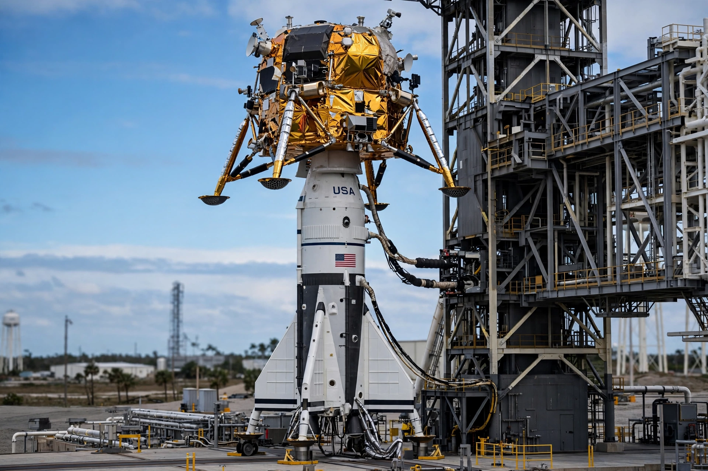

Luna 25
From Wikipedia, the free encyclopedia
| Luna 25 | |
|---|---|
| Operator | Roscosmos |
| Launch | 10 August 2023 |
| Outcome | Crashed during pre-landing manoeuvre, 19 August 2023 |
| Significance | Russia's first lunar mission since Luna 24 (1976) |

Luna 25 before launch.Luna 25 was a Russian lunar lander mission launched in August 2023 — the first Russian Moon mission in 47 years, since the Soviet Luna 24 sample return of 1976. It aimed to land near the Boguslawsky crater in the Moon's south polar region, days ahead of India's Chandrayaan-3, in what media framed as a new race to the lunar south pole.
On 19 August 2023, during a burn to shape its pre-landing orbit, the engine fired far longer than planned — reportedly 127 seconds instead of 84 — sending the craft into a fatal trajectory; it crashed into the Moon the same day. The failure underscored the atrophy of Russia's deep-space programme since Soviet times, and Roscosmos's director attributed it to the decades-long gap in lunar experience.
Aftermath
Luna 25's loss, days before Chandrayaan-3's success, was a symbolic passing of standing among lunar powers. Russia's follow-on Luna 26 orbiter and Luna 27 lander (the latter with a European drill collaboration since severed) were delayed; a fresh impact crater attributed to Luna 25 was photographed by NASA's Lunar Reconnaissance Orbiter.
See also
Chandrayaan-3 · Roscosmos · Moon · Lunar Reconnaissance Orbiter